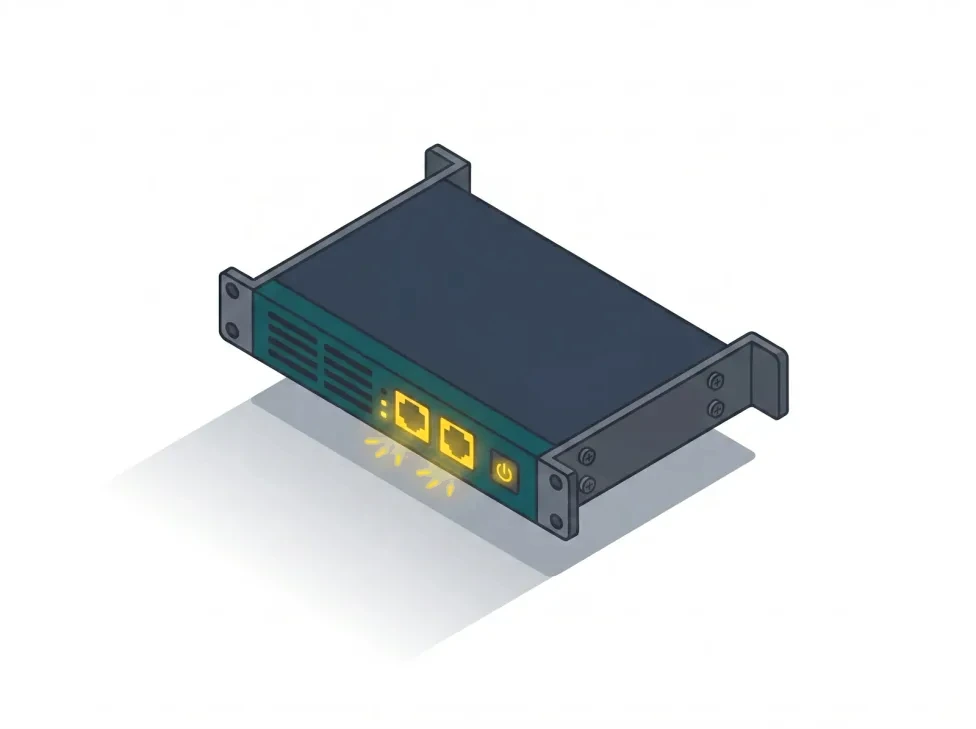

v0.9.51
Production-grade features, breaking changes still possible.
Turn Linux into a firewall.
MurOS is an open source fork of OPNsense, ported from FreeBSD to Debian 13. The same proven web UI and feature set, stateful filtering, NAT, routing, VPN and high availability, now running natively on Linux: nftables instead of pf, systemd instead of rc, apt instead of pkg. Free, on any hardware Linux runs on.
- GPL-3.0, no subscription
- Native on Debian 13
- No CLI required

Write the installer ISO to a USB key or a VM, boot it, and pick your keyboard and LAN IP. Already on Debian 13? Install the package instead.
What MurOS gives you
Free and open source
GPL-3.0. No edition, no paywall, no subscription.
Runs on your hardware
Built on Debian Linux: mini-PCs, servers, VMs and modern NICs.
One web UI
Edit, Apply, and MurOS rebuilds the nftables ruleset and reloads services through systemd. No CLI required.
Native, tested core
Every service integrated and tested together, upgraded as one.
{kind=link}